튜토리얼 영상으로 이해하기
1. 게임 개요
카드의 구성과 기본 개념
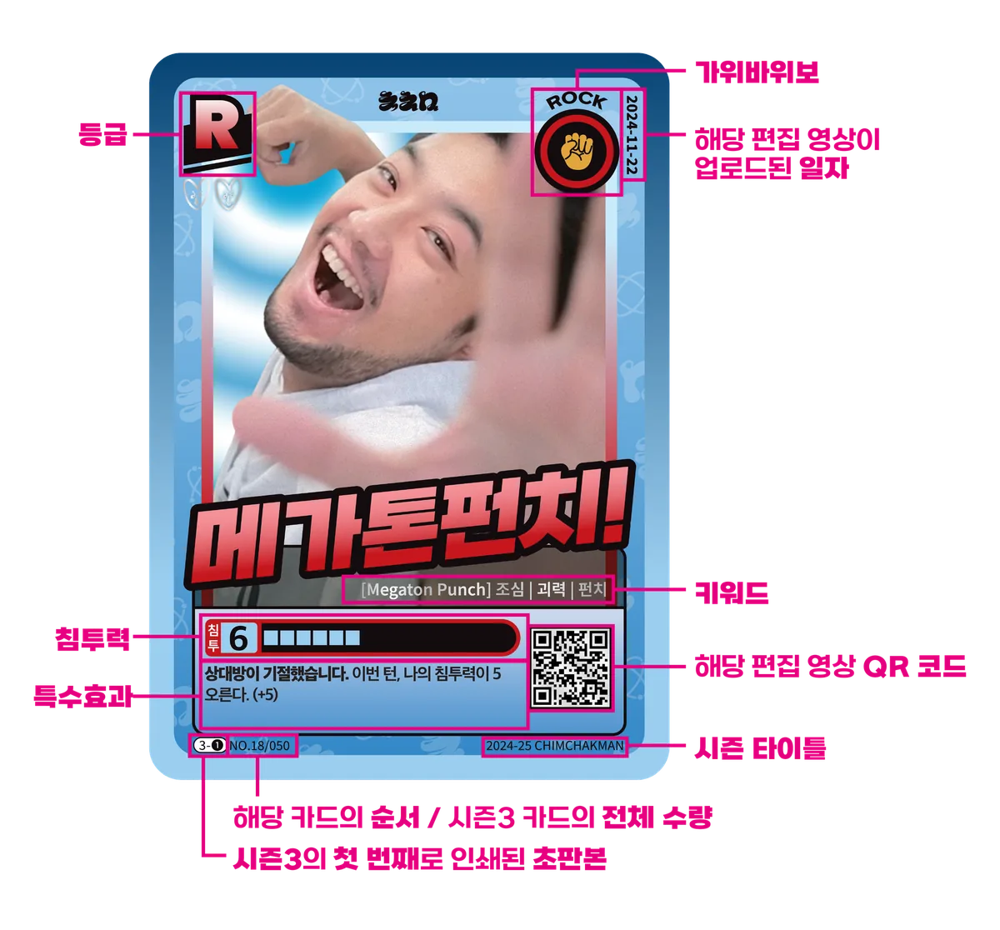
- 등급: SSR, SR, R, N 등급으로 구성
- 가위바위보: 게임의 첫 번째 대결 기준
- 침투력: 게임의 두 번째 대결 기준. 비겼을 때 침투력으로 승패를 정합니다.
- 특수 효과: 특수카드로 사용할 때 카드마다 적힌 효과를 적용해 공격하거나 방어할 수 있습니다.
플레이 매트 구성
- 전장: 무덤을 뺀 모든 구역 (전투 구역 3칸 + 특수 구역 3칸)
- 전투 구역: 전투카드로 활용할 카드를 놓는 구역
- 특수 구역: 특수카드로 활용할 카드를 놓는 구역
- 무덤: 패한 모든 카드가 가는 구역
- 손패: 게임을 위해 손에 들고 있는 모든 카드
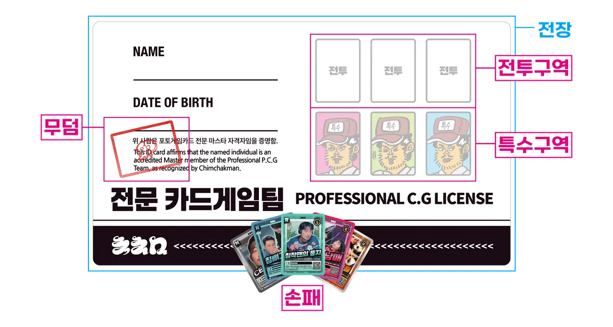
그 외 주요 용어
- 선두: 전투 구역 첫 번째 카드
- 이번 턴: 현재 진행 중인 3단계. 전투카드끼리의 대결, 진 쪽의 특수카드 활용 턴, 이긴 쪽의 특수카드 활용 턴입니다.
- 특수카드로 침투력 조작·정보 공개·가위바위보를 변경하는 경우, 카드에 "이번 턴"이라고 써 있으면 다음 턴에 원상복귀됩니다.
2. 게임 준비
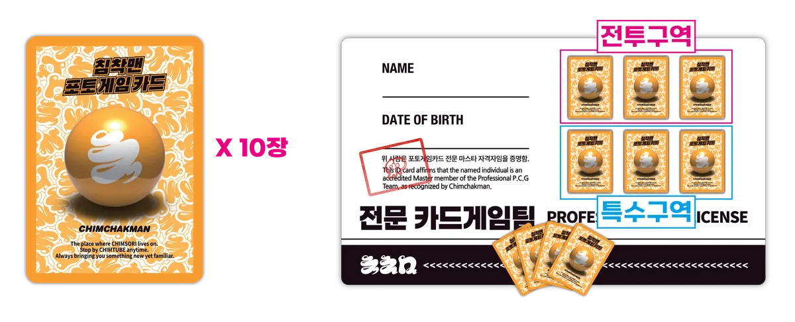
- 전장에 참여할 카드 10장을 준비합니다.
- 전투 구역에 3장, 특수 구역에 3장을 배치하고, 나머지는 손패로 시작합니다.
- 전투 구역과 특수 구역에 배치한 내 카드는 수시로 확인할 수 있습니다. 특수 구역의 카드는 배치 순서와 상관없이 사용할 수 있습니다.
- 같은 카드라도 어느 구역에 배치하느냐에 따라 전투카드 또는 특수카드로 사용할 수 있습니다.
3. 전투 시작
-
선두끼리 동시에 공개합니다
선두에 있는 나와 상대방 카드를 동시에 오픈하여 전투를 시작합니다.
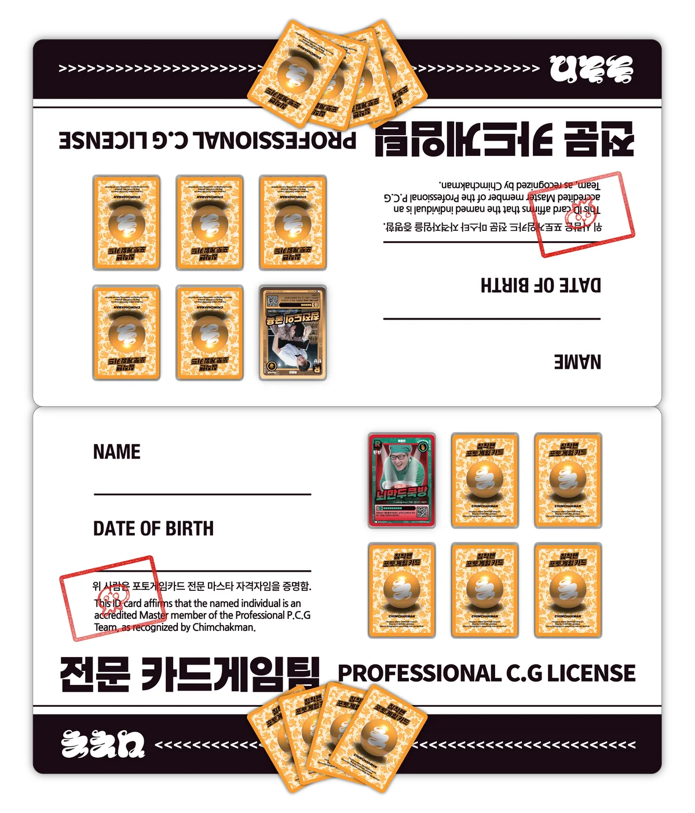
-
가위바위보 → 침투력 순으로 승부를 정합니다
특수카드까지 적용된 상태로 최종 승패를 판정하며, 패배한 카드는 무덤으로 갑니다.
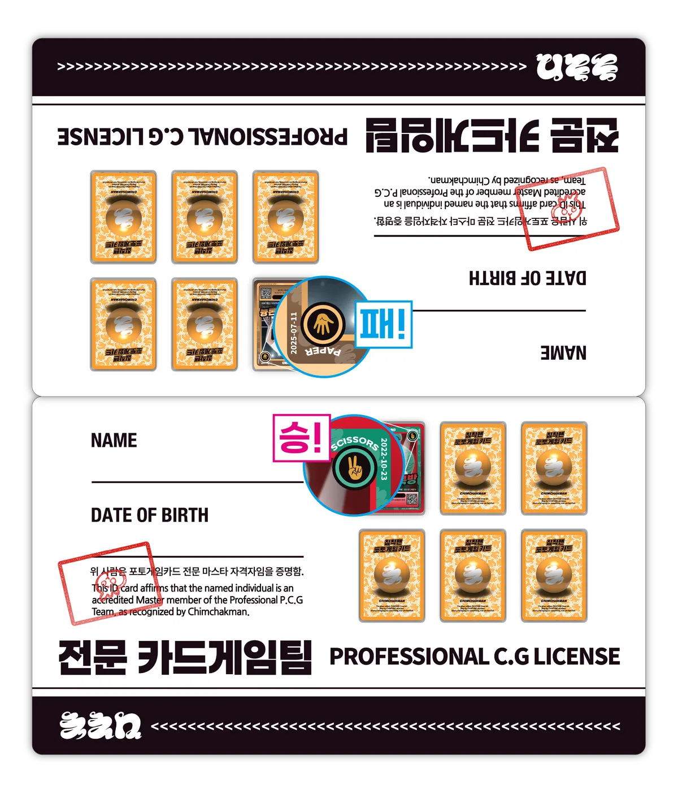
-
진 쪽이 먼저 특수카드 발동권을 가집니다
"승부"는 전투카드끼리의 대결, 진 쪽의 특수카드 활용 턴, 이긴 쪽의 특수카드 활용 턴으로 총 3번 진행됩니다.
선공의 특수카드는 후공이 무효화 카드를 가지지 않는다면 무력화되지 않습니다.
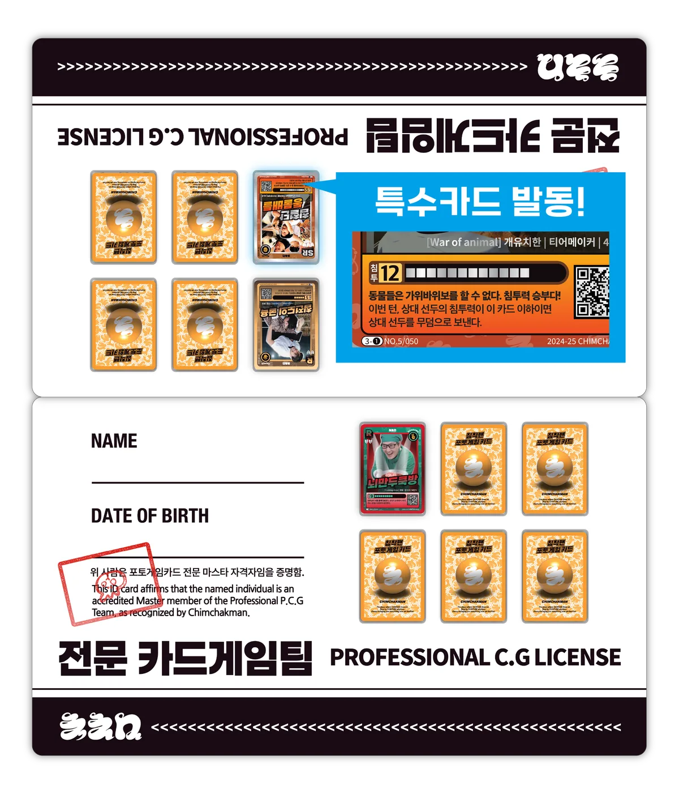
-
이긴 쪽이 방어용 특수카드로 대응합니다
각자의 턴에서 특수카드 발동은 생략할 수 있습니다.
단, 패자의 특수카드가 발동되어야만 방어용 특수카드를 사용하거나 생략할 수 있습니다.
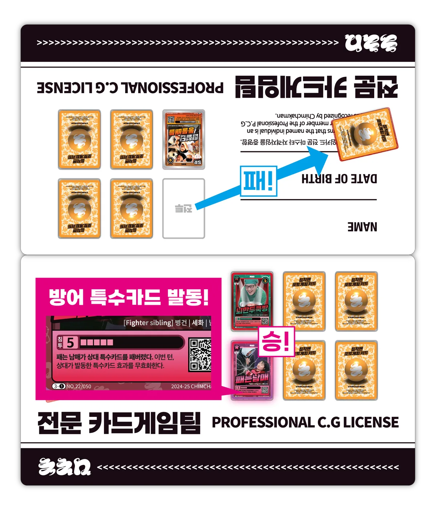
-
사용한 특수카드는 무덤으로 갑니다
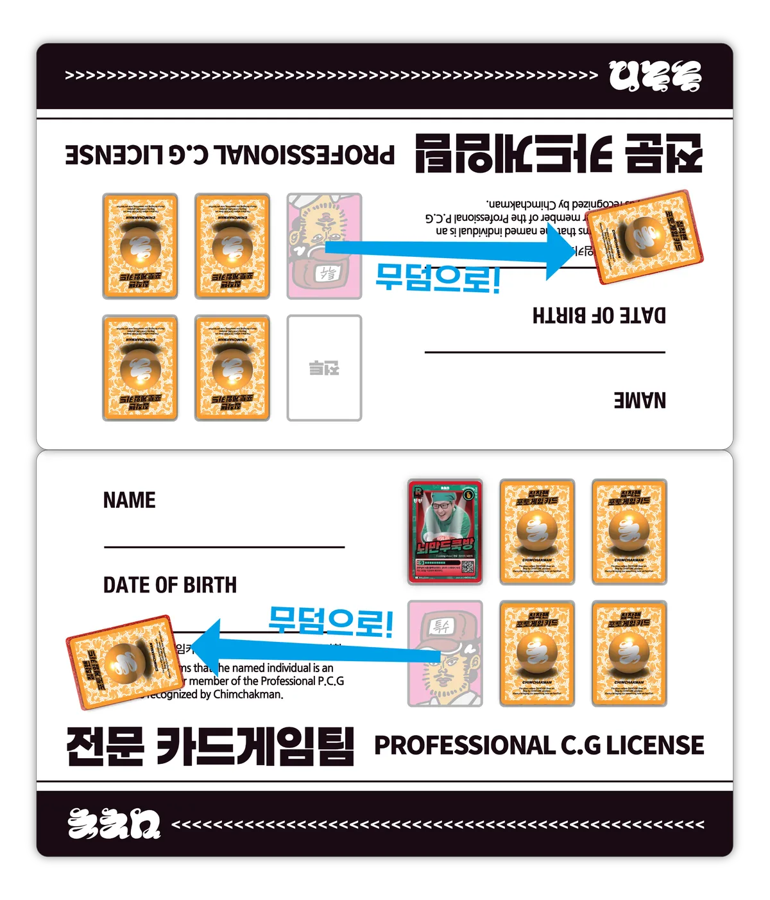
-
손패에서 1장을 내려놓습니다
승부가 끝나면 플레이어는 반드시 손패에서 1장을 내려놓습니다.
- 전투 구역이나 특수 구역 중 어디라도 빈칸이 있다면 반드시 1장 내려놓아야 합니다.
- 원하는 구역에 내려놓되, 빈 곳이 없으면 내려놓지 않고 진행합니다.
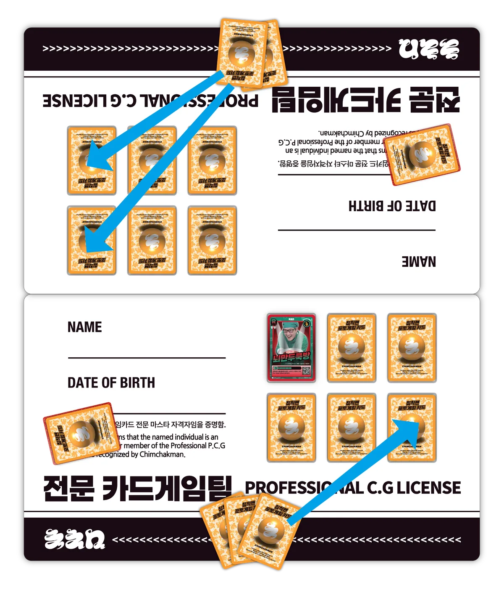
-
다음 전투를 시작합니다
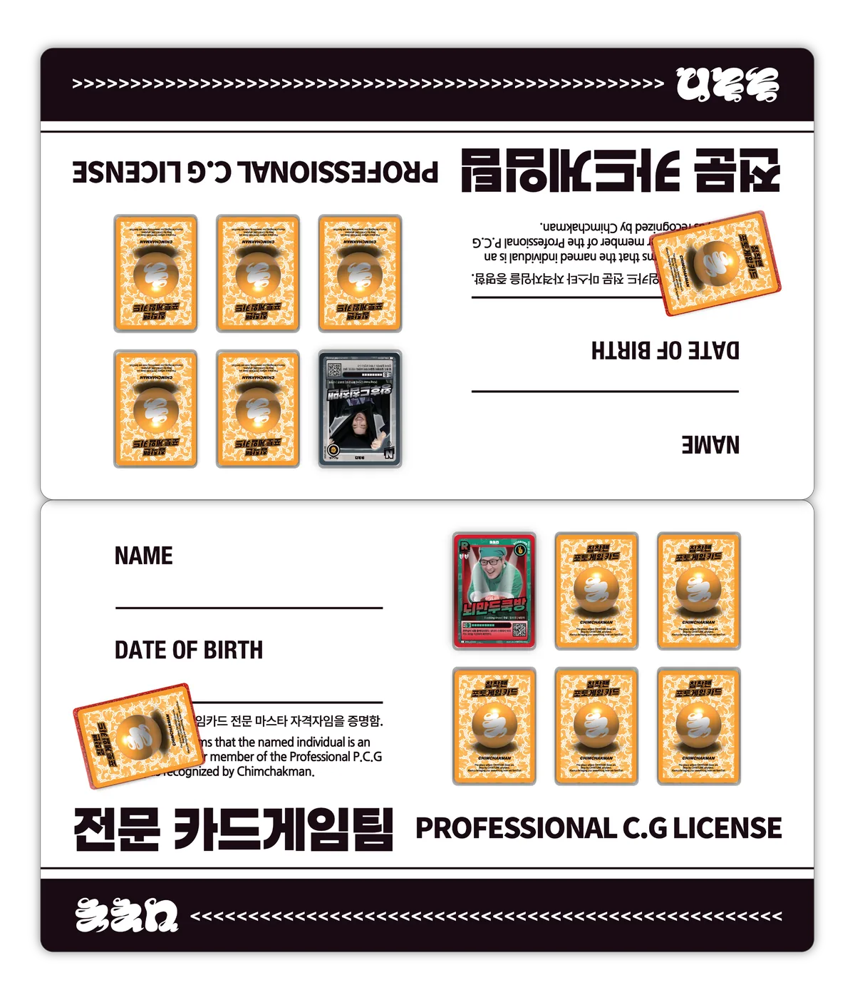
4. 승리 조건
상대의 패가 모두 끝나거나, 상대의 전투 구역에 패가 하나도 없으면 승리합니다.
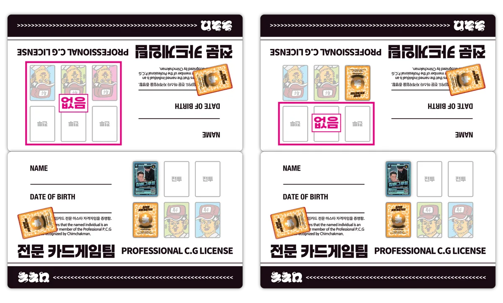
5. 세부 룰
"선두 대신" 카드
특수카드에 "선두 대신"이라는 문구가 있다면, 해당 특수카드가 그 판의 선두 카드가 됩니다.
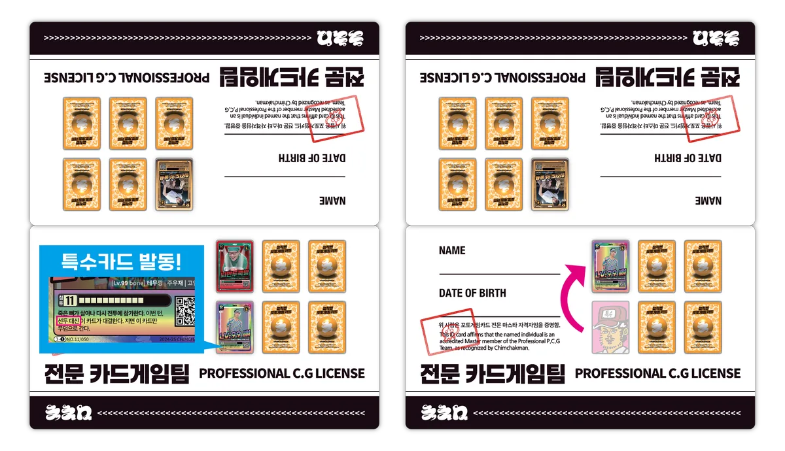
도플갱어 룰
가위바위보와 침투력이 모두 동일하다면 두 카드 모두 무덤으로 갑니다.
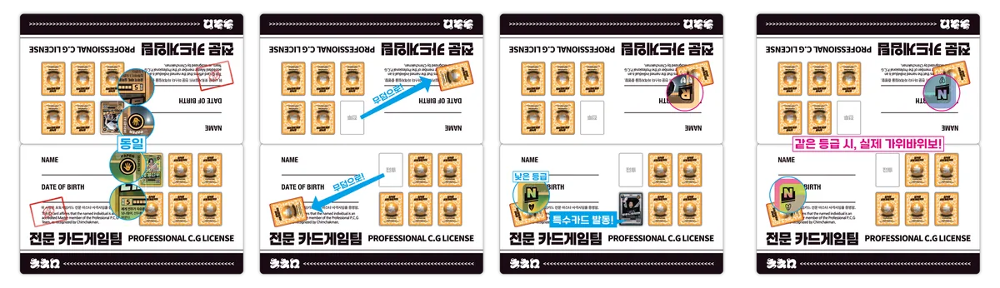
정보 공개 카드
다시 뒤집는 타이밍에 대한 내용이 없으면, 해당 카드가 전장에서 사라질 때까지 오픈된 상태로 진행합니다.
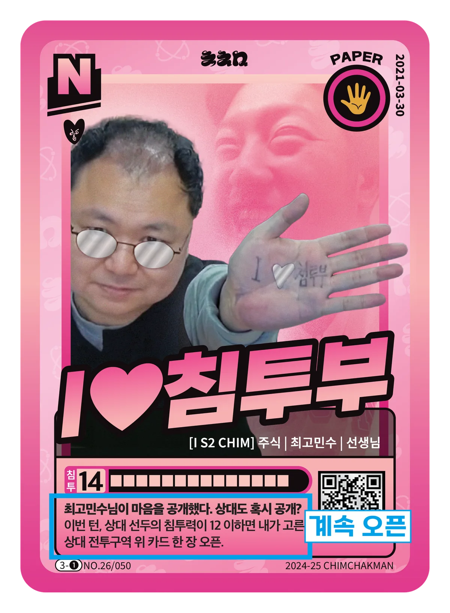
지칭어를 잘 살펴주세요
"선두", "대결 상대" 등 지칭에 따라 대결 대상이 바뀔 수 있습니다.
난이도 올리기
난이도를 올려 대결하고 싶다면, 내려놓은 특수카드를 보지 않고 진행해 보세요.
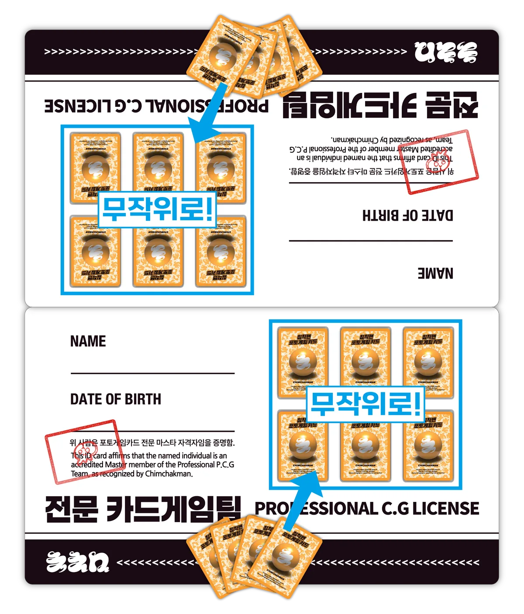
위치 변동 카드
"자리를 바꾼다", "전부 회수한다" 등 위치 변동 카드는 바로 시행하지 않고, 모든 특수카드 사용이 마무리된 다음 진행합니다.
상대편에 "무효로 되돌린다" 카드가 있을 경우 원상 복구가 어렵기 때문입니다.
예외
- V 팔척부자 (상체 카드): 전투에서 가위바위보만 적용되며, 침투력 대결에서는 패배합니다.
- V 팔척부자 (하체 카드): 특수카드로만 사용할 수 있습니다. (전투 구역에서 사용 불가)
주의사항: 게임 중독에 조심하세요.
온라인으로 플레이하기
침하하의 시뮬레이터에서 기본 룰로 바로 플레이할 수 있습니다.
카드별 상세 설명
모든 카드의 특수 효과와 유의 사항은 카드 Database에서 확인할 수 있습니다.